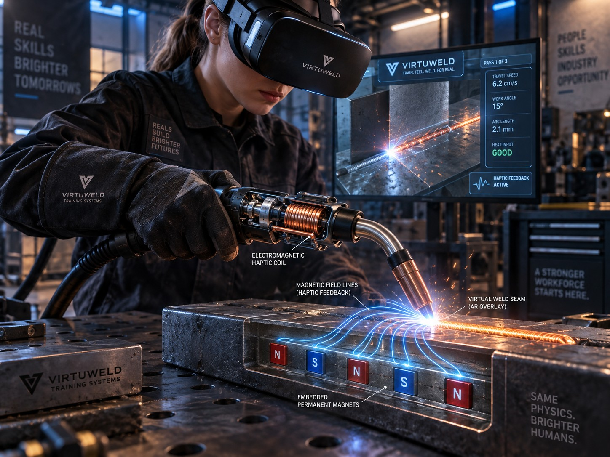

Повторять.
Без расходников.
Отрабатывайте движение на многоразовом макете. Виртуальные попытки не прожигают металл.
VR-ТРЕНАЖЁР РУЧНОЙ ЛАЗЕРНОЙ СВАРКИ
Your hand learns the seam before you ever fire the laser. No burnt plates, no class-4 beam, no instructor behind every student

Отрабатывайте движение на многоразовом макете. Виртуальные попытки не прожигают металл.
На этапе VR-практики нет излучения лазера класса 4. Внимание — на положении руки и траектории.
Планируемые визуальные, звуковые и тактильные сигналы помогут самостоятельно повторять упражнение.
ТЕХНОЛОГИЯ / КАК МЫ ЕЁ СОЗДАДИМ
Контроллер находится в руке и не закреплён к столу. VR показывает процесс, датчики считывают движение, а исполнительные элементы передают учебные сигналы.
Имитатор лазерной горелки с VR-трекером и инерциальными датчиками повторит хват и баланс инструмента. Гибкий кабель подаст питание, не фиксируя траекторию руки.
После калибровки инструмента и макета программа рассчитает положение наконечника, угол, рабочую дистанцию и скорость. VR покажет стык, целевую траекторию и условный результат прохода.
Виброактуатор в рукояти подскажет отклонение от режима. Катушка и магнитный макет создадут локальное притяжение или отталкивание вблизи поверхности — в пределах проверенной рабочей зоны.
После упражнения ученик увидит участки отклонения по углу, дистанции и скорости. Постепенное уменьшение подсказок позволит проверить самостоятельное выполнение.
Тактильные сигналы кодируют ошибки, а не воспроизводят «силу лазера». Магниты не ведут руку по произвольной траектории. Для отталкивания нужна согласованная магнитная пара; обычная стальная пластина сама по себе этого не даёт. Силы, нагрев и точность предстоит проверить на прототипе.
НАУЧНАЯ ОСНОВА
Два источника объясняют предпосылки идеи. Эффективность именно Endless seam 8 ещё предстоит подтвердить экспериментально.
Ye и соавторы исследовали VR и роботизированное позиционное и силовое сопровождение у 30 участников. Авторы сообщили о преимуществах по времени выполнения задания и точности контроля силы.
Это исследование роботизированной системы сварочного обучения. Его результаты нельзя напрямую переносить на свободный контроллер для лазерной сварки.
Enhance Kinesthetic Experience in Perceptual Learning for Welding Motor Skill Acquisition With Virtual Reality and Robot-Based Haptic Guidance.
Yang Ye, Pengxiang Xia, Fang Xu, Jing Du. IEEE Transactions on Haptics, 17(4), 771–781.
Заявка описывает управляемое притяжение и отталкивание между инструментом и макетом, в том числе ощущения вибрации для событий сварочной симуляции.
US20260127978A1 — заявка Illinois Tool Works, опубликованная 7 мая 2026 года. Это внешний технический источник, не собственный патент Endless seam 8 и не исследование эффективности обучения.
WELD TRAINING SIMULATION SYSTEMS WITH ELECTROMAGNETIC HAPTIC FEEDBACK
Авторы: Jeremy Bruesewitz, Jordan J. Kopac III, Joseph C. Schneider, Matthew Guse.
Следующий шаг: сравнить обучение с тактильными подсказками и без них, затем измерить сохранение навыка и перенос на реальное оборудование под контролем инструктора.
ИНТЕЛЛЕКТУАЛЬНАЯ СОБСТВЕННОСТЬ
Место для сведений о патенте Endless seam 8.
Placeholder. Реквизиты и статус охраны пока не представлены; этот блок не подтверждает выдачу патента.
ОПЫТ ОБУЧЕНИЯ
Демонстрационные отзывы: все цитаты и персонажи ниже вымышлены. Они иллюстрируют желаемый опыт, а не результаты испытаний.
Мне важно сначала поймать ровное движение. Здесь я мог бы повторять проход, пока рука не запомнит темп.
Я хотел бы видеть, где ученик меняет угол, и разбирать конкретное движение после каждой попытки.
Для нас ценна возможность отработать базовый маршрут до допуска к реальному лазерному оборудованию.
ENDLESS SEAM 8
Для учебных центров, колледжей и производственных команд.
Контакты скоро появятся. Кнопки демонстрационные и не отправляют сообщения.